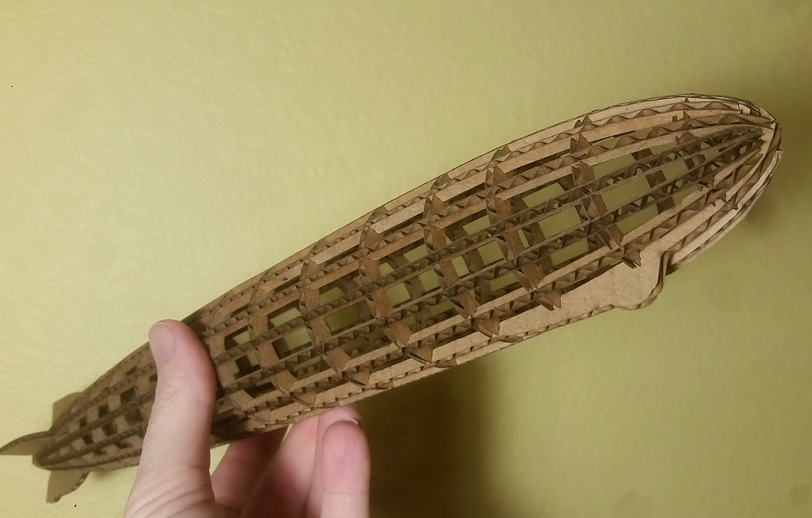
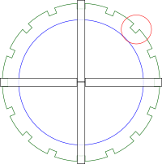

LZ 127 Graf Zeppelin laser cut model

Completed model is sixteen inches in length and approximately two inches in diameter.
There are two files associated with this model.
Notes:
-
The slots where the pieces join have been sized for 0.11 inch material.
This is a common thickness of cardboard, but you'll want to verify any material you use for this model meets this constraint.
-
The files are laid out in a format friendly to the glowforge, with colors chosen to order some cuts. You may wish to
rearrange pieces to make better use of material.
-
You will need to enter settings appropriate to whichever cutter and material you are using.
-
The bulkheads have roman numerals on them, with number 1 being at the front of the model,
and increasing toward the back. IMPORTANT: When setting up the job, use an appropriate power setting for engraving
these numerals instead of cutting, particularly if you are working with cardboard.
-
There are four "main" ribs, with fins on them. The one with the bulge which represents the gondola and altered fin
is the bottom. The side ribs can be identified because they are less thick at the front/rear than the upper and lower
main ribs (see diagram).
-
There are 12 "stringer" ribs, which lack fins. There are three of these stringer ribs between each of the main ribs.
This diagram shows how the four main ribs meet at the front/rear when looking down the
long axis of the model. Notice that the top/bottom ribs touch, but the side
ribs rest against the top bottom ones (hence their slightly thinner dimension).

Suggested assembly:
- Place the bulkheads into the bottom (main) rib.
- Add the top (main) rib, make sure all of the slots are firmly joined.
- Add the side (main) ribs.
- Add the "center" stringer ribs (see red circle in diagram). These will need to be trimmed at the front
so they just touch the main ribs.
- Add the remaining stringers, between the center stringers and main ribs. Again, these will need trimming at the front
for fit. These will also need trimming at the rear, or the rear ends may be "squished" slightly so they just sit snugly between their neighbors.
Tips:
- You'll want to make the corrugation perpendicular to the long axis of the ribs for sufficient strength to hold up during assembly.
As a bonus, this will give the ribs an open look, similar to the girders that made up the original craft.
- You can support the bulkheads from inside early in assembly,
but after a few ribs are in place this may not be possible. If working in cardboard, use a pencil
or other narrow tool to slightly compress the width of pieces at the slots so they are easier to join.
- Cardboard ribs will be very thin at the slots and call for caution during assembly, though when completed the model is
fairly durable and stands up to handling very well.
{kind=link}
{kind=link}